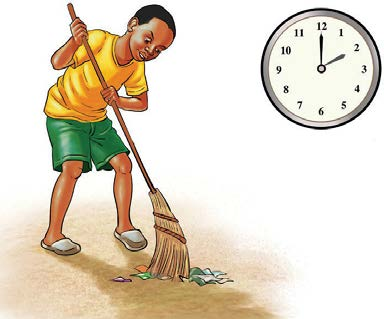
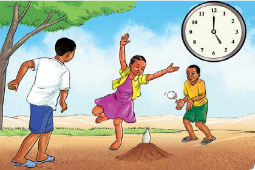

Zoezi la 6: Utungaji
Chunguza picha zifuatazo kuhusu matukio ya Adamu kwa siku za wikiendi.
Kisha, tunga habari yenye maneno kati ya themanini (80) na mia moja (100) kuhusu matukio hayo na eleza kwa ufupi mawazo yaliyojitokeza.

